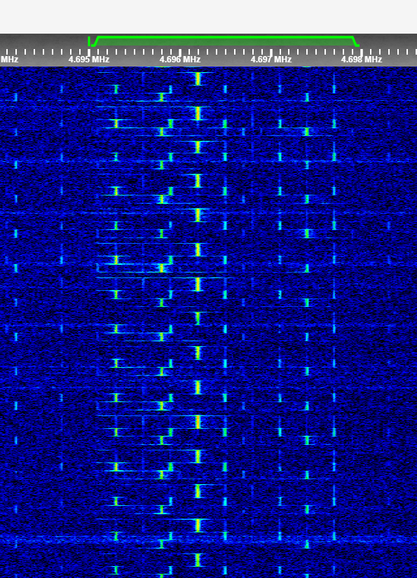

Click here to go back to the main page.
| Name: |
TsVEF Callsigns: TsVEF/TsVYeF, Yestreb31, Topol48, 6347I Signabroam ID: P4695 |
|---|---|
| Frequencies | 4695 kHz |
| Status | Inactive |
| Voice | Male (Live) |
| Mode | USB (3 kHz) |
| Location | Hungary |
| Description | TsVEF is a pirate known for being on 4695 kHz transmitting Russian like stations from Hungary, the station is known for transmitting live voices and lot of activity, also lot of troll... |
| Media |
Picture footage of the 3 tone channel marker:  T Channel marker: Footage of a Buzzer marker: 03/08/2023 Voice Message: 03/08/2023 Open mic footage: 04/08/2023 testcount: More media available here. |